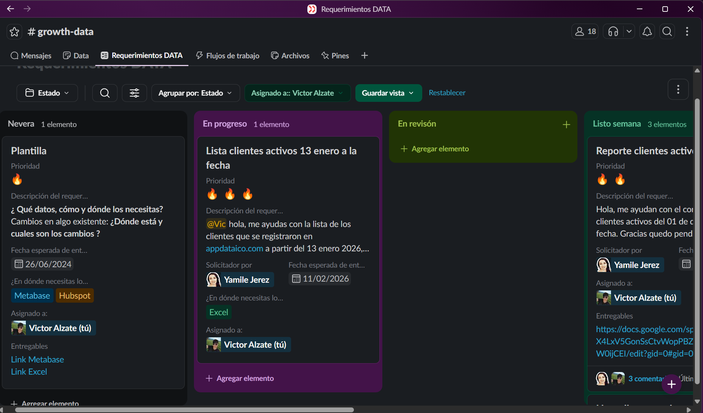
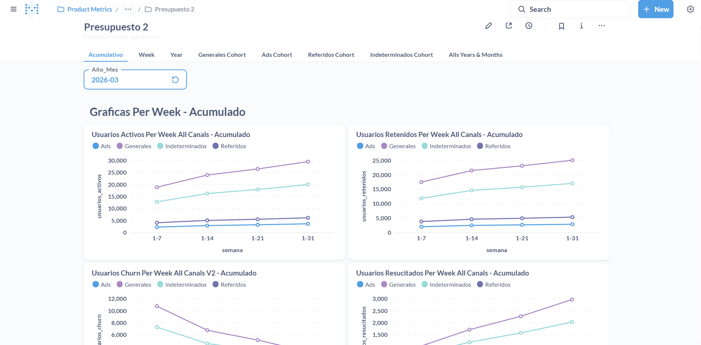
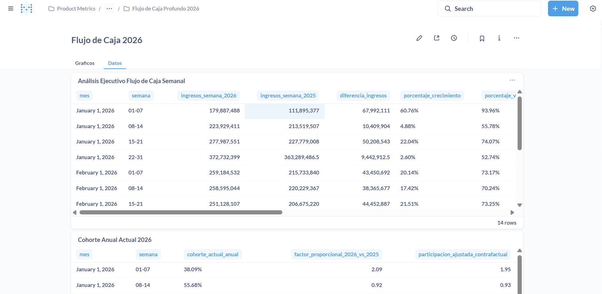
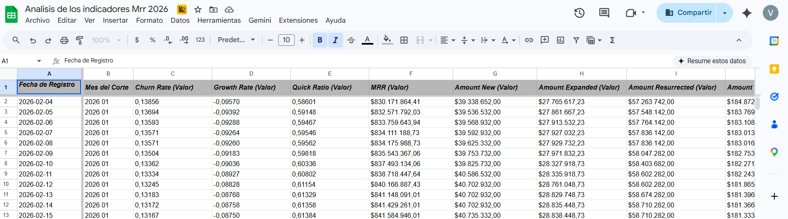
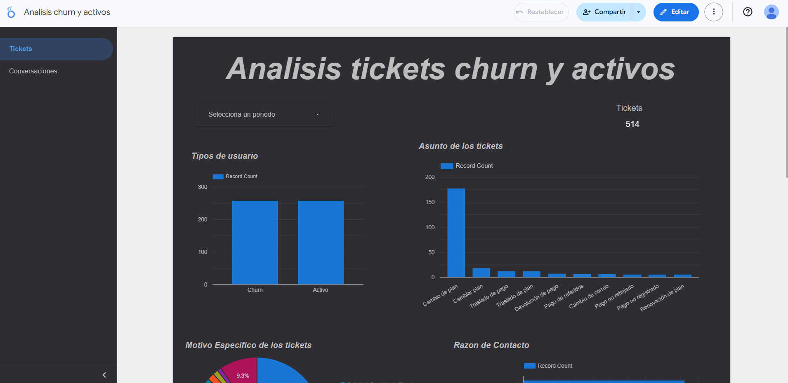
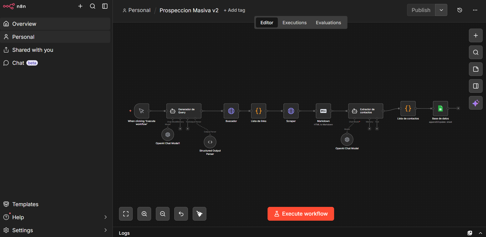
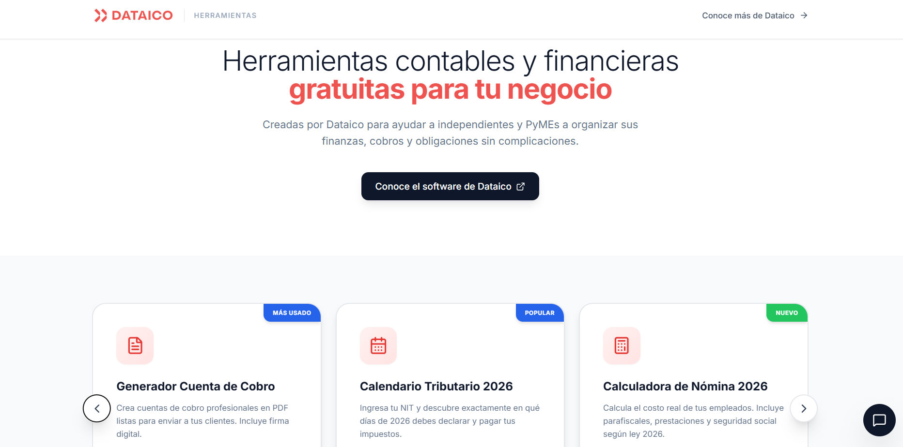
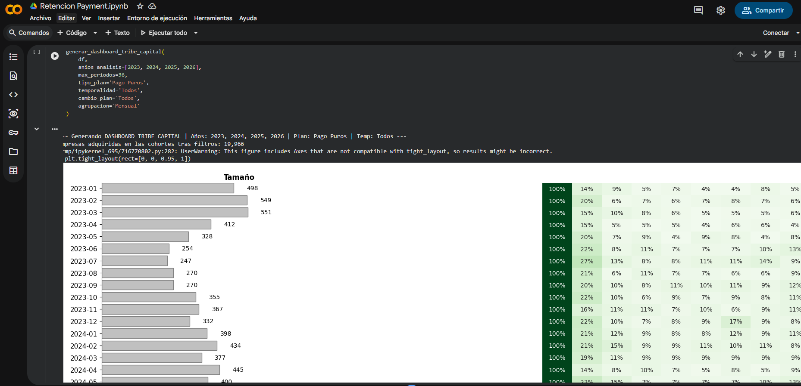

Implementación de un sistema analítico para el monitoreo y optimización de estrategias de crecimiento de clientes en el área de Growth en Dataico
Modalidad Pasantía Académica
Escuela de Ingeniería de Sistemas y Computación • Programa de Ingeniería de Sistemas
Sede Tuluá – Valle del Cauca, 2026
Víctor Manuel Alzate Morales
Código: 2313022
Mauricio López Benítez
Profesor Univalle
Ecosistema de inteligencia de negocios y automatización analítica sobre el área de Growth.
Contexto Operativo y Problemática del Negocio
Información aislada en PostgreSQL (base transaccional), HubSpot (CRM y soporte) y Google Analytics. Falta de una fuente única de verdad.
Varias horas semanales dedicadas a consolidar hojas de cálculo en Excel. Riesgo constante de error humano y discrepancias en métricas financieras.
Volatilidad no registrada en el recaudo diario (MRR) y falta de análisis cualitativo estructurado sobre las causas reales del abandono de clientes (Churn).
Objetivos Específicos y Resultados Esperados
Objetivo General: Implementar un sistema analítico modular con el propósito de estandarizar y optimizar el monitoreo de las estrategias de adquisición, activación y retención de clientes en el área de Growth.
| Objetivo Específico | Resultado Esperado Proyectado (Entregable) |
|---|---|
| 1. Diagnóstico: Identificar deficiencias y requerimientos analíticos del área. | Documento de diagnóstico y catálogo formalizado de métricas de Growth. |
| 2. Modelado: Determinar indicadores y fuentes de datos clave. | Modelo dimensional de datos en estrella (Star Schema) en PostgreSQL. |
| 3. Integración ETL: Desarrollar modelo de procesamiento automatizado. | Pipelines ETL en Python (captura MRR) y flujo NLP/LLM para análisis de Churn. |
| 4. Visualización BI: Diseñar modelo de visualización interactiva. | Suite de dashboards en Metabase y Looker Studio con vistas de presupuesto y caja. |
| 5. Evaluación: Evaluar efectividad e impacto en la toma de decisiones. | Metodología QA (0% error) e informe de impacto operativo, estratégico y financiero. |
Marco Metodológico: CRISP-DM + Kanban
- Entendimiento del negocio y diagnóstico de datos.
- Preparación y modelado dimensional (Star Schema).
- Evaluación de efectividad y despliegue continuo.
- Nevera (Backlog): Priorización estratégica.
- En Progreso: Desarrollo en SQL, Python, Metabase.
- En Revisión: Fase de Control de Calidad (QA) con usuarios.
- Listo semana (Done): Entrega final aprobada.

Arquitectura Modular del Ecosistema Analítico
PostgreSQL: Fuente central de verdad. Aloja el Data Mart y las tablas dimensionales en estrella.
GitHub Actions + Python: Captura diaria de MRR a las 00:00.
n8n: Workflows autónomos de prospección B2B.
Metabase BI: Dashboards de presupuesto y caja.
OpenAI Agent (LLM): Clasificación de chats.
Looker Studio: Reporte Churn.
Vercel Edge: Micrositio de herramientas gratuitas.
Google Analytics: Atribución de eventos.
Estructuración del Data Mart (Star Schema)
Fact_Transacciones / Fact_MRR: Registra movimientos financieros diarios, nuevos pagos, renovaciones, contracciones y cancelaciones.
- Dim_Cliente: ID anónimo, fechas de activación, industria.
- Dim_Planes: Histórico de planes y módulos contratados.
- Dim_Uso_Diario: Volumen de emisión de facturas electrónicas.
- Dim_Campanas: Atribución de canal y costo publicitario.
Elimina discrepancias entre el equipo financiero, comercial y el área de tecnología.
Reportería Automatizada (Metabase BI)


Pipeline ETL: Monitoreo Diario de MRR
Script Python ejecutado diariamente a las 00:00 mediante GitHub Actions con manejo seguro de secretos API.
Control de excepciones automatizado ante caídas temporales de red o latencia de servidores.

Análisis de Abandono (NLP + OpenAI LLM)

El 42% de las cancelaciones provenían de confusiones en el flujo de pagos. Producto priorizó la pasarela de cobros a raíz de este hallazgo.
Prospección B2B Automatizada en n8n

Formulación de búsquedas dinámicas en Google API → Conversión a Markdown → Extracción de emails/teléfonos → Redacción personalizada.
Elimina la búsqueda manual de prospectos, permitiendo que los asesores se concentren únicamente en llamadas de cierre.
Ecosistema Satélite ("Ingeniería como Marketing")

Modelo de Cohortes y Experimento de Crecimiento

Población: 144 usuarios en riesgo (1 solo módulo activo en mes 0). Intervención: Notificaciones automatizadas por WhatsApp/Email.
Validación con Usuarios y Matriz QA
- Director de Growth (CGO): Decisiones estratégicas.
- Business Analyst: Reglas de negocio y lógica SQL.
- Coordinadora de Marketing: Captación y campañas.
Presentación de entregables → Pruebas en columna En Revisión (1h a varios días) → Aprobación registrada en Kanban (*Done*).
| ID | Prueba QA | Resultado |
|---|---|---|
| TC-01 | Auditoría Flujo de Caja vs Manual | 100% Coincidencia (0% Error) |
| TC-02 | Resiliencia ETL MRR en Python | Reintentos exitosos |
| TC-03 | Clasificación NLP (13k chats) | 98% Precisión en muestra |
| TC-05 | Experimento Cohortes Retención | Incremento al 42.98% |
Conclusiones e Impacto en Dataico
Reducción de tiempos de reportería semanal de varias horas de tabulación manual a menos de 1 minuto en Metabase BI.
Estandarización de reglas de negocio en el Data Mart. Transición hacia una cultura organizacional Data-Driven.
Proyección de recaudo de MRR con <5% de error y captación orgánica de +$20M COP mediante herramientas gratuitas.
Integración de modelos LLM (OpenAI) para convertir datos cualitativos no estructurados (13k chats) en métricas cuantitativas.
Trabajos Futuros y Cierre de la Sustentación
Entrenar clasificadores (Random Forest / XGBoost) sobre el Data Mart para predecir la cancelación antes de que ocurra.
Sugerir la activación de módulos en tiempo real dentro de la plataforma según el comportamiento de la cohorte del usuario.
Evolucionar la base analítica a BigQuery o Snowflake utilizando dbt (data build tool).
Espacio Abierto para Preguntas del Jurado
Víctor Manuel Alzate Morales • Universidad del Valle